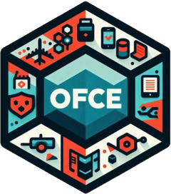

| FR | EN |
|---|---|
| Conjoncture | Economic outlook |
| Taux souverain | Sovereign interest rates |
| Commerce extérieur | International trade |
| Déficit public | Government deficit |
| Dette publique | Public debt |
| Politique budgétaire | Fiscal policy |
| Politique territoriale | Regional policy |
| Politique industrielle | Industrial policy |
| Politique monétaire | Monetary policy |
| Réglementation | Regulation |
| Fiscalité | Tax policy |
| Inflation | Inflation |
| Productivité | Productivity |
| France | France |
| Europe | Europe |
| USA | United States |
| Innovation | Innovation |
| Numérique | Digital economy |
| Agriculture | Agriculture |
| Industrie | Manufacturing |
| Énergie | Energy |
| Environment | Environment |
| Changement climatique | Climate change |
| Capitalisme | Capitalism |
| Emploi | Employment |
| Inégalités | Inequality |
| Démographie | Demographics |
| Genre | Gender equality |
| Logement | Housing |
| Retraites | Pensions |
| Etat-Providence | Welfare state |
| Protection sociale | Social protection |

Procédures du blog
Cette page fournit les informations nécessaires à la rédaction d’un billet de blog sous Quarto. Il s’appuie sur les différents programmes développés en interne pour définir une charte graphique commune et faciliter leur intégration à la rédaction.
Créer un document blog à l’aide du package ofce
La première étape est de générer un template d’un document quarto intégrant l’ensemble des méta-données assurant sa compilation dans le format souhaité (render) par Rstudio. Il suffit pour cela d’exécuter la commande suivante: ofce::setup_blog() qui va automatiquement générer un document quarto, l’ajout des extensions qui regroupent les métadonnées associées aux questions de style, ainsi qu’un document de gestion des références bibliographiques .bib
Yaml du document
Le Yaml est le préambule au script inclus entre les caractères suivants --- --- qui regroupe les métadonnées du document ainsi que certains paramètres comme le titre ou le nom des auteurs. Il se présente de la façon suivante:
---
title: "Titre du billet"
date: today
author:
- name: Albertine Retrouvée
url: https://www.ofce.sciences-po.fr/ofce/chercheurs1.php
affiliation: OFCE
affiliation-url: https://www.ofce.sciences-po.fr/
institution: "Observatoire Français des Conjonctures Économiques"
format:
blog-html: default
blog-pdf: default
categories: ["keyword1", "keyword2"]
image: image.jpg
description: "Chapeau du texte qui apparait dans la vignette du billet sur le menu"
# A activer pour permettre les commentaires via hypothesis (https://web.hypothes.is/)
# comments:
# hypothesis: true
bibliography: billet_exemple_references.bib
---Les seules informations à modifier par l’auteur sont les suivantes:
- title:
- author:
- name:
- url:
- categories:
- description:
Dans le cas où l’auteur aurait d’autres affiliation, il conviendrait de modifier également les deux lignes suivantes:
- affiliation:
- affiliation-url:
Rédaction du document
La rédaction peut se faire sur Rstudio en mode source ou en mode visual (en haut à gauche de la fenêtre). Le mode source montre le code tel qu’il est écrit, tandis que le mode visual procède à donner un rendu visuel qui s’approche de celui final (What You See Is What You Get). Le mode visuel intègre un menu qui permet d’accéder aux différentes commandes de mise en forme via une interface ergonomique.
Utilisation d’un template
Il est possible (et même encouragé) de partir depuis un template de document blog qui intègre déjà la structure requise ainsi que les différents éléments susceptibles d’y être intégrés (graphiques, citations, notes de bas de page,…)
Pour le charger automatiquement dans votre espace de travail, il suffit de lancer dans la console, la commande ‘ofce::setup_blog’. Cela créera un répertoire avec l’ensemble des élements nécessaires.
Gestion des notes de bas de page et des références bibliographiques
L’ajout de notes de bas de page se fait via la commande suivante sous Quarto [^] et comprends deux manières. Une première où est intégré dans le texte une balise [^] associée à un repère (un numéro) et auquel est ensuite associé une note de bas de page. La seconde est l’intégration directe de la note de bas de page au sein de la balise [^] (Exemple 2).
# Exemple 1
«Mademoiselle Albertine est revenue!»[^1]
[^1]: Elle n'a jamais été perdue.
# Exemple 2
«Mademoiselle Albertine est revenue!»[^Elle n'a jamais été perdue.]
Gestion des références bibliographiques
Les citations sont indiqué par le caractère @ suivi de la référence bibliographique du bibtex de l’article à citer.
Comme la souffrance va plus loin en psychologie que la psychologie [@ryan1991vanishing]
avec le BibteX dans le fichier .bib associé au billet:
@book{ryan1991vanishing,
title={The vanishing subject: early psychology and literary modernism},
author={Ryan, Judith},
year={1991},
publisher={University of Chicago Press}
}Comme la souffrance va plus loin en psychologie que la psychologie [@ryan1991vanishing]
L’auteur pourra se référer à l’aide en ligne Quarto pour des explications complémentaires sur ces deux points.
Gestion des mots-clés
Les mots-clés vont servir par la suite à filtrer les billets en sous-catégories. Un nombre maximal de trois est permis, à choisir parmi ceux indiqués ci-dessous1.
Transmission au responsable du blog et circuit de relecture
Procédure principale via Github
La transmission du billet au responsable du blog doit se faire directement sur le repo de relecture du blog du Github de l’OFCE à l’aide d’un pull request, et en assignant directement les responsables (pour plus d’information, voir la page suivante). Cet espace acceuille les billets en cours de production avant leur mise en ligne sur le blog. Il permet d’acceuillir les remarques et commentaires des relecteurs et l’échange avec les auteurs de leur différente version.
Ces derniers auront ensuite la charge de l’organisation du circuit de relecture (pour plus d’information, voir la page blog_reviewers) qui s’organise autour de l’outil Hypothes.is, qui permet l’annotation de textes en ligne dans un cadre décentralisé, et dans un groupe dédié dénommé Blog. Pour le rejoindre, il suffit déjà de s’inscrire sur le site et ensuite de rejoindre le groupe de relecture du blog via ce lien
Procédure alternative et de dernier recours
La transmission du billet au responsable du blog s’effectue par un envoi par mail du dossier du billet comprenant l’ensemble des élements nécessaires à sa compilation (le document .qmd, le fichier de références .bib, les images et les données):
Dossier du billet en format .qmd
├── billet.qmd // Document texte du billet
├── figures/ // Dossier des images utilisées dans le document
│ ├── IMG_01.png // fichier image 1
│ └── ... // fichier image ...
├── data/ // Dossier des dataset associés aux graphiques
│ ├── dataset_01.csv // fichier csv 1
│ └── ... // fichier csv ...
└── references.bib // fichier des citations en format .bibtexL’auteur, lorsque il a pu faire se verra notifier par mail des évolutions du statut du document, et le cas échéant de l’intégration des remarques et commentaires. Une fois le processus de relecture aboutit, le responsable pourra accepter le pull_request, et copier la version finalisée du billet sur le repo du blog à partir duquel le site est généré, pour sa mise en ligne effective.
PS: Dans le cas où des modifications ultérieures devraient être apportées, l’auteur devra réitérer la même procédure de pull_request que pour la soumission initiale mais ici sur le repo du blog.